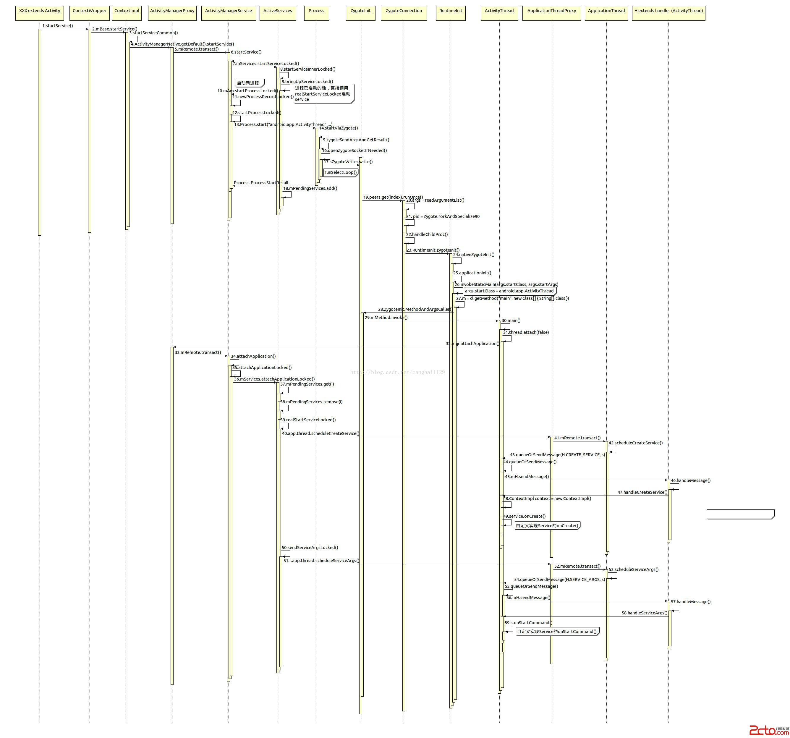

我們常用context.startService()來啟動一個service，下面來分析一下這個service的啟動過程，下圖是service啟動的序列圖:

step2，mBase.startService()中mBase定義為Context，它的真實實現是ContextImpl對象(看名字就知道是Context的實現類)。
step4，ActivityManagerNative.getDefault().startService()中ActivityManagerNative.getDefault()得到的是ActivityManagerService的代理對象ActivityManagerProxy。
step9，bringUpServiceLocked()中如果service所在進程(android:process屬性中聲明)已啟動，則直接使用realStartServiceLocked()啟動service，否則執行step10～step30先啟動新進程，新進程的啟動過程分析，可以查看 Android應用程序進程啟動過程的源代碼分析 。
step18，mPendingServices.add()中會將這個要啟動的service加入到mPendingServices這個待啟動列表中，待新進程啟動後會取出，在此時，step37中mPendingServices.get(i)。
step39，realStartServiceLocked()真的要啟動service了。
step42，scheduleCreateService()要調用Service的onCreate創建service了。
step53，scheduleServiceArgs()調用Service的onStartCommand()執行service。
下面是ActivityThread的代碼片段：
private class H extends Handler {
public static final int LAUNCH_ACTIVITY = 100;
public static final int PAUSE_ACTIVITY = 101;
public static final int PAUSE_ACTIVITY_FINISHING= 102;
public static final int STOP_ACTIVITY_SHOW = 103;
public static final int STOP_ACTIVITY_HIDE = 104;
public static final int SHOW_WINDOW = 105;
public static final int HIDE_WINDOW = 106;
public static final int RESUME_ACTIVITY = 107;
public static final int SEND_RESULT = 108;
public static final int DESTROY_ACTIVITY = 109;
public static final int BIND_APPLICATION = 110;
public static final int EXIT_APPLICATION = 111;
public static final int NEW_INTENT = 112;
public static final int RECEIVER = 113;
public static final int CREATE_SERVICE = 114;
public static final int SERVICE_ARGS = 115;
public static final int STOP_SERVICE = 116;
public static final int REQUEST_THUMBNAIL = 117;
public static final int CONFIGURATION_CHANGED = 118;
public static final int CLEAN_UP_CONTEXT = 119;
public static final int GC_WHEN_IDLE = 120;
public static final int BIND_SERVICE = 121;
public static final int UNBIND_SERVICE = 122;
public static final int DUMP_SERVICE = 123;
public static final int LOW_MEMORY = 124;
public static final int ACTIVITY_CONFIGURATION_CHANGED = 125;
public static final int RELAUNCH_ACTIVITY = 126;
public static final int PROFILER_CONTROL = 127;
public static final int CREATE_BACKUP_AGENT = 128;
public static final int DESTROY_BACKUP_AGENT = 129;
public static final int SUICIDE = 130;
public static final int REMOVE_PROVIDER = 131;
public static final int ENABLE_JIT = 132;
public static final int DISPATCH_PACKAGE_BROADCAST = 133;
public static final int SCHEDULE_CRASH = 134;
public static final int DUMP_HEAP = 135;
public static final int DUMP_ACTIVITY = 136;
public static final int SLEEPING = 137;
public static final int SET_CORE_SETTINGS = 138;
public static final int UPDATE_PACKAGE_COMPATIBILITY_INFO = 139;
public static final int TRIM_MEMORY = 140;
public static final int DUMP_PROVIDER = 141;
public static final int UNSTABLE_PROVIDER_DIED = 142;
public static final int REQUEST_ASSIST_CONTEXT_EXTRAS = 143;
public static final int TRANSLUCENT_CONVERSION_COMPLETE = 144;
public static final int INSTALL_PROVIDER = 145;
String codeToString(int code) {
if (DEBUG_MESSAGES) {
switch (code) {
case LAUNCH_ACTIVITY: return "LAUNCH_ACTIVITY";
case PAUSE_ACTIVITY: return "PAUSE_ACTIVITY";
case PAUSE_ACTIVITY_FINISHING: return "PAUSE_ACTIVITY_FINISHING";
case STOP_ACTIVITY_SHOW: return "STOP_ACTIVITY_SHOW";
case STOP_ACTIVITY_HIDE: return "STOP_ACTIVITY_HIDE";
case SHOW_WINDOW: return "SHOW_WINDOW";
case HIDE_WINDOW: return "HIDE_WINDOW";
case RESUME_ACTIVITY: return "RESUME_ACTIVITY";
case SEND_RESULT: return "SEND_RESULT";
case DESTROY_ACTIVITY: return "DESTROY_ACTIVITY";
case BIND_APPLICATION: return "BIND_APPLICATION";
case EXIT_APPLICATION: return "EXIT_APPLICATION";
case NEW_INTENT: return "NEW_INTENT";
case RECEIVER: return "RECEIVER";
case CREATE_SERVICE: return "CREATE_SERVICE";
case SERVICE_ARGS: return "SERVICE_ARGS";
case STOP_SERVICE: return "STOP_SERVICE";
case REQUEST_THUMBNAIL: return "REQUEST_THUMBNAIL";
case CONFIGURATION_CHANGED: return "CONFIGURATION_CHANGED";
case CLEAN_UP_CONTEXT: return "CLEAN_UP_CONTEXT";
case GC_WHEN_IDLE: return "GC_WHEN_IDLE";
case BIND_SERVICE: return "BIND_SERVICE";
case UNBIND_SERVICE: return "UNBIND_SERVICE";
case DUMP_SERVICE: return "DUMP_SERVICE";
case LOW_MEMORY: return "LOW_MEMORY";
case ACTIVITY_CONFIGURATION_CHANGED: return "ACTIVITY_CONFIGURATION_CHANGED";
case RELAUNCH_ACTIVITY: return "RELAUNCH_ACTIVITY";
case PROFILER_CONTROL: return "PROFILER_CONTROL";
case CREATE_BACKUP_AGENT: return "CREATE_BACKUP_AGENT";
case DESTROY_BACKUP_AGENT: return "DESTROY_BACKUP_AGENT";
case SUICIDE: return "SUICIDE";
case REMOVE_PROVIDER: return "REMOVE_PROVIDER";
case ENABLE_JIT: return "ENABLE_JIT";
case DISPATCH_PACKAGE_BROADCAST: return "DISPATCH_PACKAGE_BROADCAST";
case SCHEDULE_CRASH: return "SCHEDULE_CRASH";
case DUMP_HEAP: return "DUMP_HEAP";
case DUMP_ACTIVITY: return "DUMP_ACTIVITY";
case SLEEPING: return "SLEEPING";
case SET_CORE_SETTINGS: return "SET_CORE_SETTINGS";
case UPDATE_PACKAGE_COMPATIBILITY_INFO: return "UPDATE_PACKAGE_COMPATIBILITY_INFO";
case TRIM_MEMORY: return "TRIM_MEMORY";
case DUMP_PROVIDER: return "DUMP_PROVIDER";
case UNSTABLE_PROVIDER_DIED: return "UNSTABLE_PROVIDER_DIED";
case REQUEST_ASSIST_CONTEXT_EXTRAS: return "REQUEST_ASSIST_CONTEXT_EXTRAS";
case TRANSLUCENT_CONVERSION_COMPLETE: return "TRANSLUCENT_CONVERSION_COMPLETE";
case INSTALL_PROVIDER: return "INSTALL_PROVIDER";
}
}
return Integer.toString(code);
}
public void handleMessage(Message msg) {
if (DEBUG_MESSAGES) Slog.v(TAG, ">>> handling: " + codeToString(msg.what));
switch (msg.what) {
case LAUNCH_ACTIVITY: {
Trace.traceBegin(Trace.TRACE_TAG_ACTIVITY_MANAGER, "activityStart");
ActivityClientRecord r = (ActivityClientRecord)msg.obj;
r.packageInfo = getPackageInfoNoCheck(
r.activityInfo.applicationInfo, r.compatInfo);
handleLaunchActivity(r, null);
Trace.traceEnd(Trace.TRACE_TAG_ACTIVITY_MANAGER);
} break;
case RELAUNCH_ACTIVITY: {
Trace.traceBegin(Trace.TRACE_TAG_ACTIVITY_MANAGER, "activityRestart");
ActivityClientRecord r = (ActivityClientRecord)msg.obj;
handleRelaunchActivity(r);
Trace.traceEnd(Trace.TRACE_TAG_ACTIVITY_MANAGER);
} break;
case PAUSE_ACTIVITY:
Trace.traceBegin(Trace.TRACE_TAG_ACTIVITY_MANAGER, "activityPause");
handlePauseActivity((IBinder)msg.obj, false, msg.arg1 != 0, msg.arg2);
maybeSnapshot();
Trace.traceEnd(Trace.TRACE_TAG_ACTIVITY_MANAGER);
break;
case PAUSE_ACTIVITY_FINISHING:
Trace.traceBegin(Trace.TRACE_TAG_ACTIVITY_MANAGER, "activityPause");
handlePauseActivity((IBinder)msg.obj, true, msg.arg1 != 0, msg.arg2);
Trace.traceEnd(Trace.TRACE_TAG_ACTIVITY_MANAGER);
break;
case STOP_ACTIVITY_SHOW:
Trace.traceBegin(Trace.TRACE_TAG_ACTIVITY_MANAGER, "activityStop");
handleStopActivity((IBinder)msg.obj, true, msg.arg2);
Trace.traceEnd(Trace.TRACE_TAG_ACTIVITY_MANAGER);
break;
case STOP_ACTIVITY_HIDE:
Trace.traceBegin(Trace.TRACE_TAG_ACTIVITY_MANAGER, "activityStop");
handleStopActivity((IBinder)msg.obj, false, msg.arg2);
Trace.traceEnd(Trace.TRACE_TAG_ACTIVITY_MANAGER);
break;
case SHOW_WINDOW:
Trace.traceBegin(Trace.TRACE_TAG_ACTIVITY_MANAGER, "activityShowWindow");
handleWindowVisibility((IBinder)msg.obj, true);
Trace.traceEnd(Trace.TRACE_TAG_ACTIVITY_MANAGER);
break;
case HIDE_WINDOW:
Trace.traceBegin(Trace.TRACE_TAG_ACTIVITY_MANAGER, "activityHideWindow");
handleWindowVisibility((IBinder)msg.obj, false);
Trace.traceEnd(Trace.TRACE_TAG_ACTIVITY_MANAGER);
break;
case RESUME_ACTIVITY:
Trace.traceBegin(Trace.TRACE_TAG_ACTIVITY_MANAGER, "activityResume");
handleResumeActivity((IBinder)msg.obj, true,
msg.arg1 != 0, true);
Trace.traceEnd(Trace.TRACE_TAG_ACTIVITY_MANAGER);
break;
case SEND_RESULT:
Trace.traceBegin(Trace.TRACE_TAG_ACTIVITY_MANAGER, "activityDeliverResult");
handleSendResult((ResultData)msg.obj);
Trace.traceEnd(Trace.TRACE_TAG_ACTIVITY_MANAGER);
break;
case DESTROY_ACTIVITY:
Trace.traceBegin(Trace.TRACE_TAG_ACTIVITY_MANAGER, "activityDestroy");
handleDestroyActivity((IBinder)msg.obj, msg.arg1 != 0,
msg.arg2, false);
Trace.traceEnd(Trace.TRACE_TAG_ACTIVITY_MANAGER);
break;
case BIND_APPLICATION:
Trace.traceBegin(Trace.TRACE_TAG_ACTIVITY_MANAGER, "bindApplication");
AppBindData data = (AppBindData)msg.obj;
handleBindApplication(data);
Trace.traceEnd(Trace.TRACE_TAG_ACTIVITY_MANAGER);
break;
case EXIT_APPLICATION:
if (mInitialApplication != null) {
mInitialApplication.onTerminate();
}
Looper.myLooper().quit();
break;
case NEW_INTENT:
Trace.traceBegin(Trace.TRACE_TAG_ACTIVITY_MANAGER, "activityNewIntent");
handleNewIntent((NewIntentData)msg.obj);
Trace.traceEnd(Trace.TRACE_TAG_ACTIVITY_MANAGER);
break;
case RECEIVER:
Trace.traceBegin(Trace.TRACE_TAG_ACTIVITY_MANAGER, "broadcastReceiveComp");
handleReceiver((ReceiverData)msg.obj);
maybeSnapshot();
Trace.traceEnd(Trace.TRACE_TAG_ACTIVITY_MANAGER);
break;
case CREATE_SERVICE:
Trace.traceBegin(Trace.TRACE_TAG_ACTIVITY_MANAGER, "serviceCreate");
handleCreateService((CreateServiceData)msg.obj);
Trace.traceEnd(Trace.TRACE_TAG_ACTIVITY_MANAGER);
break;
case BIND_SERVICE:
Trace.traceBegin(Trace.TRACE_TAG_ACTIVITY_MANAGER, "serviceBind");
handleBindService((BindServiceData)msg.obj);
Trace.traceEnd(Trace.TRACE_TAG_ACTIVITY_MANAGER);
break;
case UNBIND_SERVICE:
Trace.traceBegin(Trace.TRACE_TAG_ACTIVITY_MANAGER, "serviceUnbind");
handleUnbindService((BindServiceData)msg.obj);
Trace.traceEnd(Trace.TRACE_TAG_ACTIVITY_MANAGER);
break;
case SERVICE_ARGS:
Trace.traceBegin(Trace.TRACE_TAG_ACTIVITY_MANAGER, "serviceStart");
handleServiceArgs((ServiceArgsData)msg.obj);
Trace.traceEnd(Trace.TRACE_TAG_ACTIVITY_MANAGER);
break;
case STOP_SERVICE:
Trace.traceBegin(Trace.TRACE_TAG_ACTIVITY_MANAGER, "serviceStop");
handleStopService((IBinder)msg.obj);
maybeSnapshot();
Trace.traceEnd(Trace.TRACE_TAG_ACTIVITY_MANAGER);
break;
case REQUEST_THUMBNAIL:
Trace.traceBegin(Trace.TRACE_TAG_ACTIVITY_MANAGER, "requestThumbnail");
handleRequestThumbnail((IBinder)msg.obj);
Trace.traceEnd(Trace.TRACE_TAG_ACTIVITY_MANAGER);
break;
case CONFIGURATION_CHANGED:
Trace.traceBegin(Trace.TRACE_TAG_ACTIVITY_MANAGER, "configChanged");
mCurDefaultDisplayDpi = ((Configuration)msg.obj).densityDpi;
handleConfigurationChanged((Configuration)msg.obj, null);
Trace.traceEnd(Trace.TRACE_TAG_ACTIVITY_MANAGER);
break;
case CLEAN_UP_CONTEXT:
ContextCleanupInfo cci = (ContextCleanupInfo)msg.obj;
cci.context.performFinalCleanup(cci.who, cci.what);
break;
case GC_WHEN_IDLE:
scheduleGcIdler();
break;
case DUMP_SERVICE:
handleDumpService((DumpComponentInfo)msg.obj);
break;
case LOW_MEMORY:
Trace.traceBegin(Trace.TRACE_TAG_ACTIVITY_MANAGER, "lowMemory");
handleLowMemory();
Trace.traceEnd(Trace.TRACE_TAG_ACTIVITY_MANAGER);
break;
case ACTIVITY_CONFIGURATION_CHANGED:
Trace.traceBegin(Trace.TRACE_TAG_ACTIVITY_MANAGER, "activityConfigChanged");
handleActivityConfigurationChanged((IBinder)msg.obj);
Trace.traceEnd(Trace.TRACE_TAG_ACTIVITY_MANAGER);
break;
case PROFILER_CONTROL:
handleProfilerControl(msg.arg1 != 0, (ProfilerControlData)msg.obj, msg.arg2);
break;
case CREATE_BACKUP_AGENT:
Trace.traceBegin(Trace.TRACE_TAG_ACTIVITY_MANAGER, "backupCreateAgent");
handleCreateBackupAgent((CreateBackupAgentData)msg.obj);
Trace.traceEnd(Trace.TRACE_TAG_ACTIVITY_MANAGER);
break;
case DESTROY_BACKUP_AGENT:
Trace.traceBegin(Trace.TRACE_TAG_ACTIVITY_MANAGER, "backupDestroyAgent");
handleDestroyBackupAgent((CreateBackupAgentData)msg.obj);
Trace.traceEnd(Trace.TRACE_TAG_ACTIVITY_MANAGER);
break;
case SUICIDE:
Process.killProcess(Process.myPid());
break;
case REMOVE_PROVIDER:
Trace.traceBegin(Trace.TRACE_TAG_ACTIVITY_MANAGER, "providerRemove");
completeRemoveProvider((ProviderRefCount)msg.obj);
Trace.traceEnd(Trace.TRACE_TAG_ACTIVITY_MANAGER);
break;
case ENABLE_JIT:
ensureJitEnabled();
break;
case DISPATCH_PACKAGE_BROADCAST:
Trace.traceBegin(Trace.TRACE_TAG_ACTIVITY_MANAGER, "broadcastPackage");
handleDispatchPackageBroadcast(msg.arg1, (String[])msg.obj);
Trace.traceEnd(Trace.TRACE_TAG_ACTIVITY_MANAGER);
break;
case SCHEDULE_CRASH:
throw new RemoteServiceException((String)msg.obj);
case DUMP_HEAP:
handleDumpHeap(msg.arg1 != 0, (DumpHeapData)msg.obj);
break;
case DUMP_ACTIVITY:
handleDumpActivity((DumpComponentInfo)msg.obj);
break;
case DUMP_PROVIDER:
handleDumpProvider((DumpComponentInfo)msg.obj);
break;
case SLEEPING:
Trace.traceBegin(Trace.TRACE_TAG_ACTIVITY_MANAGER, "sleeping");
handleSleeping((IBinder)msg.obj, msg.arg1 != 0);
Trace.traceEnd(Trace.TRACE_TAG_ACTIVITY_MANAGER);
break;
case SET_CORE_SETTINGS:
Trace.traceBegin(Trace.TRACE_TAG_ACTIVITY_MANAGER, "setCoreSettings");
handleSetCoreSettings((Bundle) msg.obj);
Trace.traceEnd(Trace.TRACE_TAG_ACTIVITY_MANAGER);
break;
case UPDATE_PACKAGE_COMPATIBILITY_INFO:
handleUpdatePackageCompatibilityInfo((UpdateCompatibilityData)msg.obj);
break;
case TRIM_MEMORY:
Trace.traceBegin(Trace.TRACE_TAG_ACTIVITY_MANAGER, "trimMemory");
handleTrimMemory(msg.arg1);
Trace.traceEnd(Trace.TRACE_TAG_ACTIVITY_MANAGER);
break;
case UNSTABLE_PROVIDER_DIED:
handleUnstableProviderDied((IBinder)msg.obj, false);
break;
case REQUEST_ASSIST_CONTEXT_EXTRAS:
handleRequestAssistContextExtras((RequestAssistContextExtras)msg.obj);
break;
case TRANSLUCENT_CONVERSION_COMPLETE:
handleTranslucentConversionComplete((IBinder)msg.obj, msg.arg1 == 1);
break;
case INSTALL_PROVIDER:
handleInstallProvider((ProviderInfo) msg.obj);
break;
}
if (DEBUG_MESSAGES) Slog.v(TAG, "<<< done: " + codeToString(msg.what));
}
private void maybeSnapshot() {
if (mBoundApplication != null && SamplingProfilerIntegration.isEnabled()) {
// convert the *private* ActivityThread.PackageInfo to *public* known
// android.content.pm.PackageInfo
String packageName = mBoundApplication.info.mPackageName;
android.content.pm.PackageInfo packageInfo = null;
try {
Context context = getSystemContext();
if(context == null) {
Log.e(TAG, "cannot get a valid context");
return;
}
PackageManager pm = context.getPackageManager();
if(pm == null) {
Log.e(TAG, "cannot get a valid PackageManager");
return;
}
packageInfo = pm.getPackageInfo(
packageName, PackageManager.GET_ACTIVITIES);
} catch (NameNotFoundException e) {
Log.e(TAG, "cannot get package info for " + packageName, e);
}
SamplingProfilerIntegration.writeSnapshot(mBoundApplication.processName, packageInfo);
}
}
}
這部分代碼是ActivityThread的一個內部類H，裡面定義了activity、service等啟動、銷毀等事件的響應，也就是說activity、service的啟動、銷毀都是在ActivityThread中進行的。